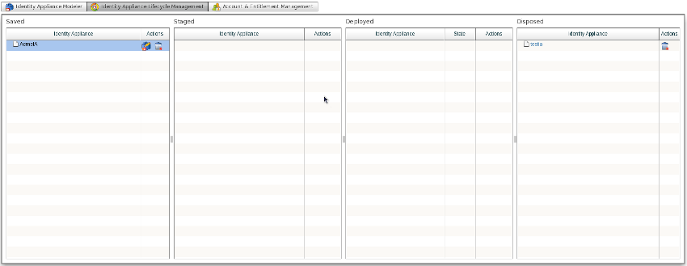

JOSSO.orgCommunity Documentation
The Identity Architect also controls the transformation of the identity architecture model into a fully executing artifact. As in the identity appliance modeler, this process is carried out in a point-and-click fashion.
The Identity Appliance Lifecycle Management screen offers a grid-based layout, within which tables represent the different states the identity appliance artifact can be in. Transitioning the identity appliance from one state to another state is achieved by dragging the identity appliance item from one table of the grid - representing the source state - and dropping it onto the table representing the target state.

Enabling an Identity Appliance Model to deliver the specified identity and access management services requires that you transform it to an executable artifact. Simply put, the executable artifact onto which an identity appliance is mapped is a set of JOSSO2 descriptors that are packaged as an OSGi bundle. JOSSO2 descriptors contribute identity and access management service definitions - such as SAML endpoints - to the underlying core.
In order to build an identity appliance, select the corresponding row for the target identity appliance within the "Saved" table of the lifecycle management grid.
The "Saved" table holds entries for the identity appliances that are candidates for compilation, and will ultimately be deployed and executed. Within this state, identity appliances can be edited and removed. To continue with the design process, click on the TBD:insert image button to open the identity appliance within the modeler view. To delete an identity appliance, click on the TBD: insert image button.
To build an identity appliance, select and drag the row for the target identity appliance item from the "Saved" table and drop it onto the "Staged" table of the grid. If the operation is successful, the target identity appliance will appear in the "Deployed" table of the lifecycle management grid.
Once an identity appliance has been transformed to an executable artifact it is still not available for execution, since the underlying execution environment is not aware of its existence. In order to execute an identity appliance you must first deploy it by installing the corresponding artifact onto the JOSSO2 execution environment.
The identity appliances candidates for deployment are shown in the "Staged" table of the lifecycle management grid.
The "Staged" table holds entries for the identity appliances that have been successfully compiled. Within this state, identity appliances can be viewed and rebuilt. To continue the design process, click on the TBD: insert image button to open the identity appliance within the modeler view. Then, click on the TBD:insert image button to rebuild the identity appliance (required in order to achieve visibility of the latest changes made in the editing session).
To deploy an identity appliance, select and drag the row for the target identity appliance item from the "Staged" table and drop it onto the "Deployed" table. The target identity appliance should appear in the "Deployed" table of the lifecycle management grid.
Once an identity appliance has been deployed - meaning that it is now hosted within the JOSSO2 execution environment - it is available for execution.
The "Deployed" table holds the entries for identity appliances which have been deployed and are candidates for execution. Within the deployed state, identity appliances can be either running or stopped. The "State" column shows the identity appliance's current state. Possible states include: "Deployed", "Started" or "Stopped". The deployed state, identified as "DEPLOYED" in the State column, represents identity appliances which have been deployed, but have not been started. The started state ("STARTED" in the State column) represents identity appliances which have been deployed and started. These identity appliance definitions are being realized through identity and access management services which are available to consumers. Finally, the stopped state ("STOPPED" in the State column) represents identity appliances that are no longer executing. Services corresponding to these identity appliance definitions are no longer up and running. Within the "Actions" columns three actions can be applied to the identity appliance: "Start","Stop" and "Undeploy".
Within the "Deployed" table of the lifecycle management grid, click on the TBD: insert image button in the Actions column. This starts the identity appliance, transitioning it to the "Started" state. The target identity appliance should display as "started" in the State column.
Identity Appliance undeployment can be carried out from the "Deployed" table of the lifecycle management grid. Click on the TBD: insert image button to undeploy an identity appliance, which will transition it to the staged state. The target Identity Appliance will be undeployed and transitioned to the "Staged" state, and should appear in the "Staged" table of the lifecycle management grid.
Identity Appliance disposal can be carried out from the "Staged" table of the lifecycle management grid. This can be accomplished in two distinct ways: 1) Click on the TBD: insert image button to dispose of an identity appliance, transitioning it to the "Disposed" state. 2) Select and drag the row for the target identity appliance item from the "Staged" table and drop it onto the "Disposed" table. The target Identity Appliance will be disposed and transitioned to the "Disposed" state, and should appear in the "Disposed" table of the lifecycle management grid.
An identity appliance that is no longer in use may be discarded and completely erased from the system. Once an identity appliance is removed, it cannot be recovered.
Disposal can be realized for appliances in either the "Saved" and "Disposed" states. The "Disposed" table holds the entries for the identity appliances that have been discarded, and are no longer available to be edited or executed. Identity Appliances within this states are candidates for definitive removal.
In order to dispose of an identity appliance in the "Disposed" table, select the row for the identity appliance and click on the TBD: insert image button within the state column. The disposed-of identity appliance should no longer show up within the state-specific tables of the lifecycle management grid.
In order to dispose of an identity appliance in the "Saved" table, select the row for the identity appliance and click on the TBD: insert image button within the state column. The disposed-of identity appliance should no longer show up within the state-specific tables of the lifecycle management grid.